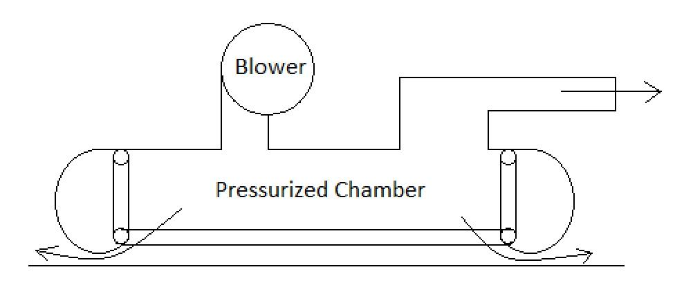
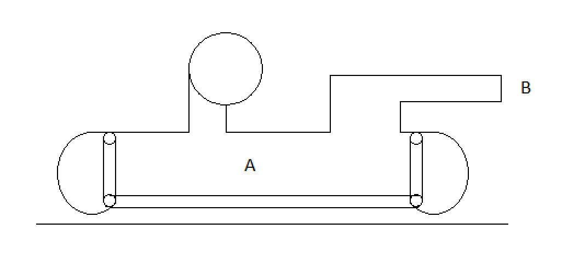
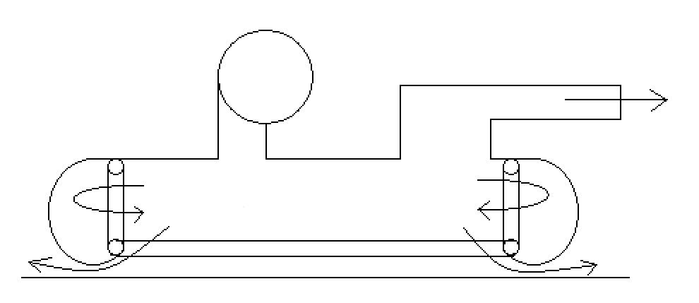

The blower creates a pressurized chamber underneath the hovercraft.
Once enough pressure has been built up (total weight of hovercraft / area),
a small amount of air escapes under the skirt to create an air cushion
A hole is cut in the pressurized chamber to allow air to escape. This
becomes the nozzle and provides the thrust

Calculations explained
Using Bernoulli’s equation, the total energy under the hovercraft
(point A) is equal to the total energy just outside the nozzle (point B)
Point A is potential energy from the pressure. We’re assuming 0 air
velocity, which means the kinetic energy is 0. Therefore, the energy
at point A can be represented by P⁄p
Point B is kinetic energy. We’re assuming the pressure goes to 0
relative to the pressurized chamber, which means the potential energy
is 0. Therefore, the energy at point B can be represented by
1⁄2 V2

We can set the potential energy from the pressurized chamber equal
to the kinetic energy from the nozzle. Doing this, we get
P⁄p = 1⁄2 V2
We can now solve for the velocity at point B
Now that we know the velocity, we can calculate the area of the
nozzle that is needed to get the thrust that we want. This equation is
F = pV2A.
Now that we know the velocity of the air coming out of the nozzle as
well as the area of the nozzle, we can find the flowrate that is necessary
to sustain the flow coming out of the nozzle while not losing pressure
underneath the hovercraft. Flowrate = V*A
Blowers are often rated by flowrate at different pressures. The chart
provided attempts to provide standardized flowrate vs pressure that can
be used to find a blower that meets the requirements. To calculate the
flowrate at the different pressures, we can use the fact that pressure * volume
will always be the same. This means that Pstandardized *
Volumestandardized = Pcalculated * Volumecalculated
which can be rearranged to Volumestandardized = (Volumecalculated
* Pcalculated) / (Pstandardized) so we can calculate
the volume at each pressure we want to plot.
Skirt Design
The skirt inflates to lift the hovercraft (much like an air mattress).
Once the skirt has inflated, the excess air escapes under the skirt to
create an air cushion, which is nearly frictionless. The skirt must be
designed to allow for free airflow to either the skirt or the rest of the
bottom of the hovercraft to allow this to happen.

Drive System
V-belt drives like what is used on yard equipment work well
If you are going to use a clutch, be sure the clutch can handle the
load of the blower without slipping. A clutch may not be needed if
you use a large enough engine to handle the load of the blower while
it is starting
Split taper bushings generally work well for attaching the pulleys to
the engine and blower. Refer to any documentation that comes with the
engine, blower, or drive components to ensure they are attached properly.
Generally the higher quality belts have a higher efficiency than the
lower quality belts. This may seem obvious, but it could be the reason
the blower is not being driven effectively enough to get the intended
performance out of it
It is extremely important that everything on the drive system is lined
up properly, and both the engine and blower are rigidly mounted. Be
sure the belt is tensioned properly. Too loose and it will slip or be
thrown off. Too tight and the belt will burn up
Design the hovercraft in such a way that the operator and bystanders
are shielded from the drive system in case anything comes loose
Consider investing in a tachometer. The tachometer can measure the speed
of the engine vs the speed of the blower. This will allow you to
calculate the efficiency (actual blower speed vs expected blower speed
at the actual engine speed). Aim for 90% or above efficiency
Other things to consider
Weight is important when designing and building the hovercraft. The
more weight you have, the less it will hover, which will affect overall
performance. Use lightweight materials when building the hovercraft
(ex. PVC pipes vs 2x4’s or metal pipes)
Some blowers show the power recommendations for the electric motor that
can be used with them (many blowers are used in a/c systems and are usually
driven by an electric motor). Use this as a guide to determine what size
motor you will need to drive the blower